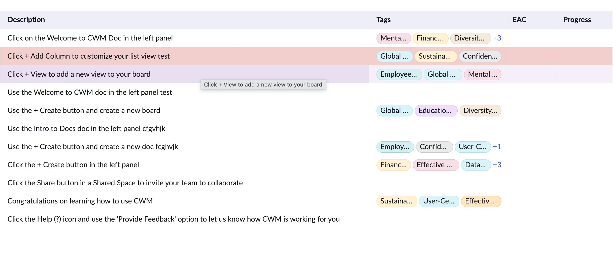

Reach × Leverage
A shared data-grid component renders the tables inside six ServiceNow SPM products. On a release with limited capacity and a large defect backlog, this is how — working with the PMs of those six workspaces — we prioritized what the grid should ship, and why three high-leverage bets beat a pile of low-severity bugs.
Prioritized together with the PMs of all six consuming workspaces.
One component, six products.
The data-grid is a shared UI component — the table that six SPM products render their data in:
That shared nature changes the economics of every decision. Build a capability once and all six products get it instantly. Ship a regression once and all six inherit it. So the right question is never "does this one team want it?" — it's "how far does this multiply, and what does it cost everyone downstream?" That lens is what this case study is about.
The core platform trade-off is consistency vs. autonomy: generalize too much and the component bloats; leave too much to each team and they fork it. Every call below is really about where that line sits.
A committed release, a deep backlog, limited capacity.
Everything below shipped on one committed release train for the grid. Sitting underneath it was a large defect backlog — but a backlog that was mostly isolated, low-severity (P3), single-surface issues: real, worth fixing, but each one helping exactly one screen.
Roughly 70% of capacity went to clearing those defects — that's the baseline job. The interesting decision was the other slice: on a shared component, which non-defect bets are worth displacing a stack of P3s? That's where a framework matters, so you're choosing on leverage rather than on whoever asked loudest.
Four factors, one tie-breaker.
Together we scored every candidate against four things — a lens I helped bring to the table:
- ReachHow many of the six consumers actually benefit.
- FrequencyHow often it touches the core user loop.
- LeverageDoes it lower the cost of everything that comes after.
- CommitmentIs it on the release train to a named consumer.
On a shared component the tie-breaker is reach × leverage: a single change multiplies across every consumer, so a broad or cost-reducing item outranks a deep pile of narrow ones. That's why the three bets below each beat the P3 backlog they displaced.
What won a slot, and why.
Compact mode — density as information throughput.
Every dense planning workspace renders this same grid. Build density once and all of them get "more rows per screen" instantly — the highest-leverage shape a feature can take on a shared component.
Planning and triage at scale is the primary task. Row density isn't cosmetic — it's how much a user can see and act on in one pass.
Held font size constant and got density purely from spacing tokens, so readability and accessibility were never traded away. Two modes — compact and normal — not three. It persists as a user preference, gated behind a property each consumer controls.
P1, committed, broad reach into the core loop → clears any pile of single-surface P3s.
Because compact mode ships at the instance level, the capability lands across all six workspaces the moment the grid ships — no per-team work required. Whether to switch it on stays each consumer's call; the leverage is that the option exists everywhere by construction. The real-world payoff is largest where grids are longest and most-scanned — Resource Management and Financials first.
 Normal · 15 rows
Normal · 15 rows Compact · 19 rows
Compact · 19 rowsSame table, same data, same font size — compact surfaces about four more rows per screen (~25%). The density came from spacing tokens, not shrinking the type, so readability held.
 Compact ships as a per-user toggle each consumer controls.
Compact ships as a per-user toggle each consumer controls.Row highlight — two upgrades to the most-used interaction.
The most-used loop in any grid is the same: scan a row → open its record → act. Anything that makes that loop clearer or more personal compounds — every user, every session. Two things shipped here.
A stronger highlight for the last-interacted record. Open a row's record in the side panel and the row you came from stays clearly marked — so you never lose your place moving between the list and the detail, and you're far less likely to act on the wrong record.
Let users highlight rows themselves, in colors from the theme palette. Now people can mark rows by their own meaning — flag, group, track — so the grid becomes something they organize at a glance instead of a fixed table they only read. This is the more impactful of the two: it turns a passive scan into an interaction the user controls.
Both ship once and land in every consumer's grid — a small surface for an outsized payoff. The user-controlled coloring especially adds everyday value people keep coming back to.

Row highlighting in useBoth upgrades, live: rows marked in user-chosen theme colors to flag what matters, plus a clear highlight on the row you're interacting with — so your place is never lost.
Adopt the shared column config — the invisible bet.
Repeated column-config defects across consumers were the signal; the insight was that the root cause was architectural — the same config logic forked in several places; the action was to consolidate onto one shared component. Defects read as product research, not just a queue to burn down.
Consuming the shared column-configuration component means every future column feature lands once, instead of being rebuilt in the grid's own fork. Defer it and every later story gets more expensive — debt that compounds.
The acceptance criterion was literally "the user experience should remain." Zero user-facing risk, pure platform payoff — the safest kind of investment.
Done alongside the column work, so the multi-consumer regression set is tested once, not twice.
You don't prioritize tech debt for its own sake — you prioritize it when deferring it taxes the roadmap. This one was an unblocker.
The "no" pile — and why.
Saying yes to those three meant saying no to a lot of reasonable requests. Each of these was real value; each lost to something with more reach or less risk:
Saved view presets per user
Remembers column order and filters per layout. Overlapped with consumer-owned config — deferred until the shared column-config foundation landed, rather than duplicate platform work.
Dark-theme polish on pinned-column borders
Visual consistency in one theme. Single-surface and cosmetic, P3 / Won't-Fix tier — no impact on the core loop.
Drag-to-reorder animation smoothing
A nicer feel on row and column reorder. Pure polish; the existing behavior was already functional and accessible.
In-cell rich-text / markdown rendering
Richer content in description cells. Niche to a few consumers, and it added rendering and performance risk against virtualization — limited reach for the cost.
Configurable empty-state illustrations
Per-consumer branding flexibility. Aesthetic; the default empty state already covered the functional need.
Bulk inline-edit (multi-row paste)
Power-user efficiency for data entry. High complexity plus multi-tenant edit-payload risk, with value concentrated in a single workflow.
Column-level keyboard shortcut hints
Discoverability of grid actions. Marginal once core keyboard navigation — the accessibility wave — was already solid.
The principle: each of these was real value, but each was either narrow in reach (one surface or one workflow), redundant with platform- or consumer-owned capability, or high-risk for low-frequency use. They were parked behind the items that touched every consumer's core loop — and revisited as capacity and the platform foundation allowed.
Selective, on top of the baseline.
Compact mode and row highlight won on reach into the core loop; the tech debt won on leverage — it made everything downstream cheaper. The rest of the backlog stayed deferred because each item was narrow and low-severity.
This is selective, high-leverage prioritization layered on top of the ~70% still spent clearing defects — not instead of it. Knowing which 30% to defend is the part that's product judgment.
Treat the grid like a product, not a library.
- Instrument configuration usage so data — not the loudest team — drives the roadmap.
- Push toward self-serve configuration so teams onboard without engineering hand-holding.
- Give the grid its own changelog, deprecation policy, and consumer expectations — six teams depending on you means you owe them the predictability of a platform.